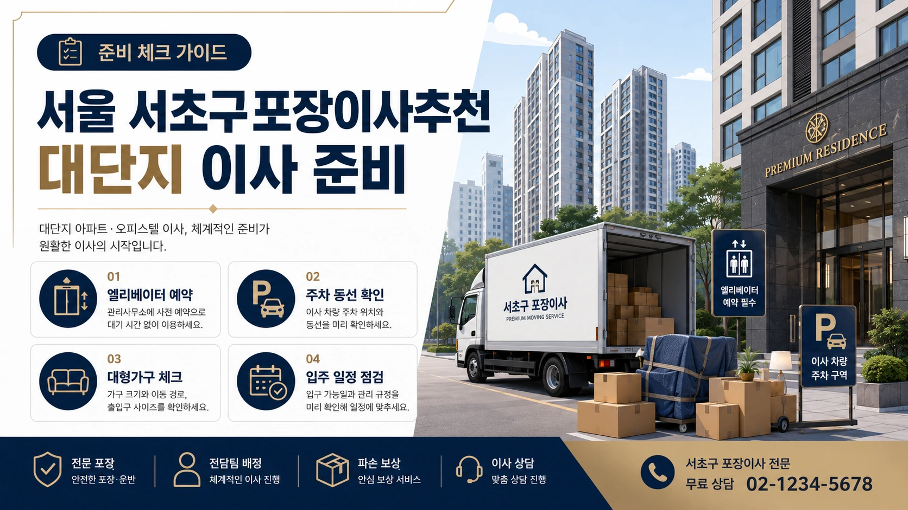
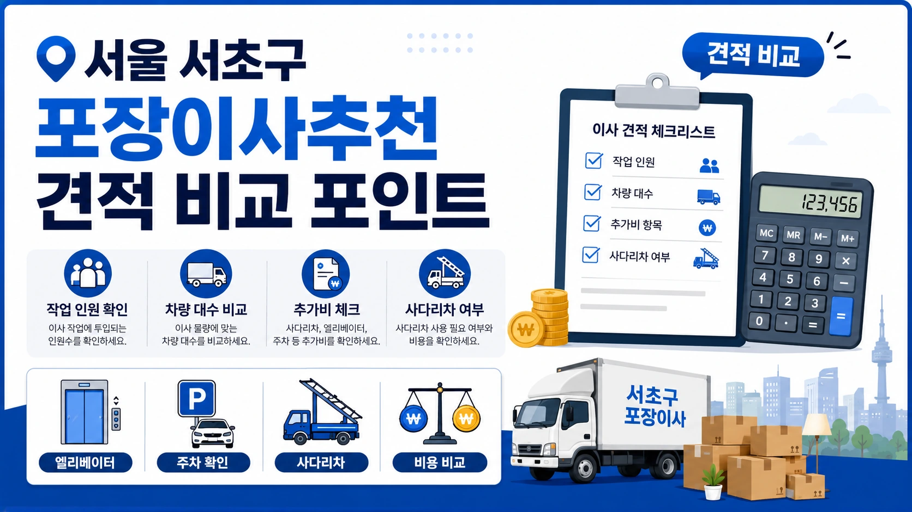
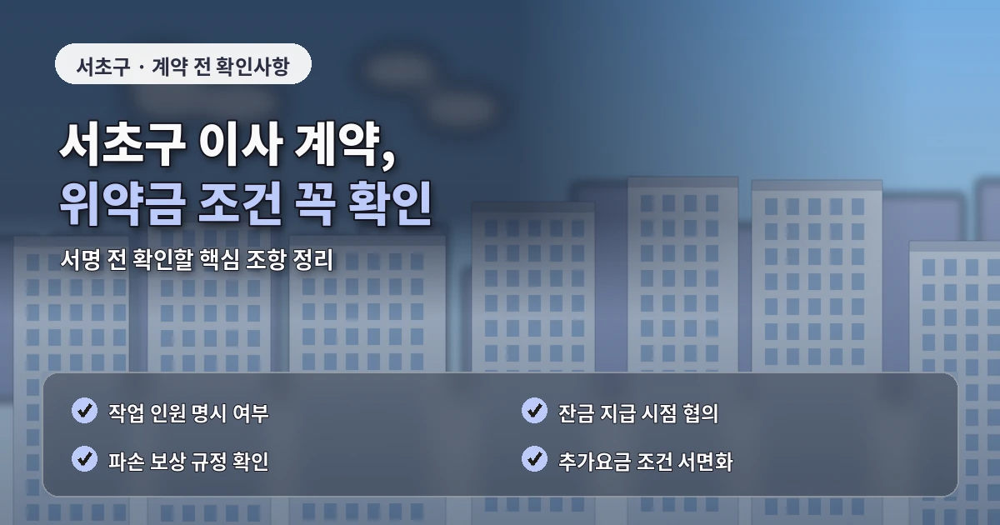

서울 서초구포장이사추천 고급단지 계약 체크
서초구 포장이사는
고급 아파트와 대단지,
빌라와 단독주택이 함께 있어
견적 단계에서 확인할 항목이 많습니다.
서초동과 반포동은 대단지와 고급 주거지가 많고,
잠원동은 한강변 아파트와 재건축 단지가 있으며,
방배동은 빌라와 주택가가 함께 있습니다.

서초구 포장이사 비용은
짐의 양뿐 아니라
관리사무소 규정,
보양 작업,
엘리베이터 예약,
사다리차 제한,
가전과 가구 보호 방식에 따라 달라질 수 있습니다.
견적이 달라지는 현장 조건
고급 단지에서는
공용공간 보양 기준이 엄격한 경우가 많습니다.
바닥, 벽면, 엘리베이터 내부,
복도 모서리까지 보호재를 설치해야 할 수 있어
견적 상담 때 보양 범위를 반드시 확인해야 합니다.
이 부분이 빠져 있으면
작업 당일 추가비용이 생기거나
관리사무소와 일정 조율이 어려워질 수 있습니다.
서초구의 고층 아파트는
엘리베이터 예약도 중요합니다.

이사 가능 시간이 정해져 있거나
화물 엘리베이터 사용 조건이 따로 있을 수 있습니다.
업체 비교 전 확인할 기준
예약 시간이 맞지 않으면
작업 대기 시간이 생기고
전체 일정이 밀릴 수 있습니다.
사다리차 사용 가능 여부도
미리 확인해야 합니다.
단지 구조나 도로 조건에 따라
사다리차 설치가 제한되는 곳이 있고,
고층 작업에서는 별도 장비나 추가 인력이 필요할 수 있습니다.
서초구 포장이사 업체추천을 볼 때는
물건 보호 방식이 구체적인 업체를 우선 보는 것이 좋습니다.
고가 가전,
원목 가구,
대형 TV,
수입 가구,
피아노나 특수 물품이 있다면
포장재와 운반 방식이 일반 이사와 달라야 합니다.
견적서에 파손 보상 기준이 명확히 적혀 있는지도 확인해야 합니다.

추가비용을 줄이는 준비 순서
포장이사 비교견적은
총액보다 포함 항목을 봐야 합니다.
작업 인원,
차량 대수,
보양 범위,
가전 분리와 연결,
가구 분해 조립,
사다리차,
특수 물품 운반,
정리 서비스 범위를
같은 기준으로 비교해야 합니다.
방배동의 빌라나 단독주택은
골목 진입과 주차 공간이 중요한 경우가 많습니다.
차량이 멀리 서게 되면
운반 시간이 길어질 수 있고
작업 인원이 더 필요할 수 있습니다.
출발지와 도착지의 조건을 모두 정확히 알려야
실제 비용에 가까운 견적을 받을 수 있습니다.
계약 전에는
일정 변경 조건과 취소 규정도 확인하는 것이 좋습니다.
계약 전에 남겨둘 내용
서초구는 입주 일정,
잔금 일정,
관리사무소 예약이 맞물리는 경우가 많아
일정이 변경되면 비용 문제가 생길 수 있습니다.
서초구 포장이사는
단순히 저렴한곳을 찾는 것보다
보호 작업과 계약 기준이 명확한 업체를 고르는 것이 중요합니다.
비용, 견적, 업체추천 정보를 비교할 때도
고급 단지 규정과 물건 보호 기준을 함께 확인해야
안정적인 이사 준비가 가능합니다.
서초구 포장이사에서
가장 신중하게 봐야 할 부분은 책임 범위입니다.
고가 가전이나 가구가 많은 집은
작은 흠집도 분쟁으로 이어질 수 있으므로
작업 전 사진 기록과 보상 기준 확인이 필요합니다.
업체가 포장 전 상태를 어떻게 확인하는지,
파손이 발생했을 때 어떤 절차로 처리하는지
상담 단계에서 물어보는 것이 좋습니다.
또한 도착지 배치 계획도 미리 세워두면 좋습니다.
큰 가구가 들어갈 위치를 정하지 않은 상태에서
작업이 진행되면 가구를 여러 번 옮기게 되고
바닥이나 벽면 손상 위험도 높아질 수 있습니다.
서초구 포장이사추천 정보를 참고할 때는
가격보다 세부 조건을 얼마나 투명하게 설명하는지 확인해야 합니다.
보양, 보호, 보상, 일정 조율이 명확한 업체일수록
고급 단지 이사에서 안정적인 결과를 기대할 수 있습니다.
서초구 포장이사는 작업 전 사전 안내가 특히 중요합니다.
고급 단지나 관리가 엄격한 아파트는
이사 차량 출입 시간, 보양 범위, 엘리베이터 사용 규정이
세부적으로 정해져 있는 경우가 많습니다.
이 조건을 업체와 미리 공유하지 않으면
작업 시작이 지연되거나 추가 준비가 필요할 수 있습니다.
또한 서초구는 고가 가전과 대형 가구가 있는 집이 많아
포장재 종류와 보호 방식도 확인해야 합니다.
TV, 냉장고, 세탁기, 원목가구, 유리장식장은
일반 박스 포장만으로는 부족할 수 있으므로
업체의 보호 자재와 운반 방식을 구체적으로 물어보는 것이 좋습니다.
서초구 포장이사는 계약서에 보양 범위와 보상 기준을 남기는 것이 좋습니다.
고가 물품이 많을수록 사전 확인이 안전한 선택입니다.
자주 묻는 질문
A. 보양 범위, 엘리베이터 예약, 물건 보호 방식, 파손 보상 기준을 확인해야 합니다.
A. 단지 구조나 도로 조건에 따라 제한될 수 있어 관리사무소와 업체에 미리 확인해야 합니다.
A. 가구 상태와 크기, 운반 주의사항을 사진과 함께 전달하고 보상 기준을 확인하는 것이 좋습니다.